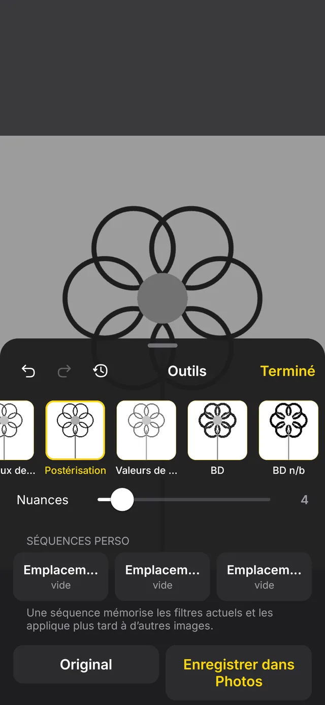
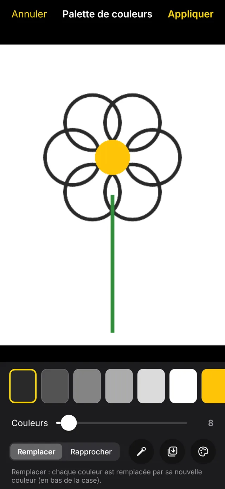
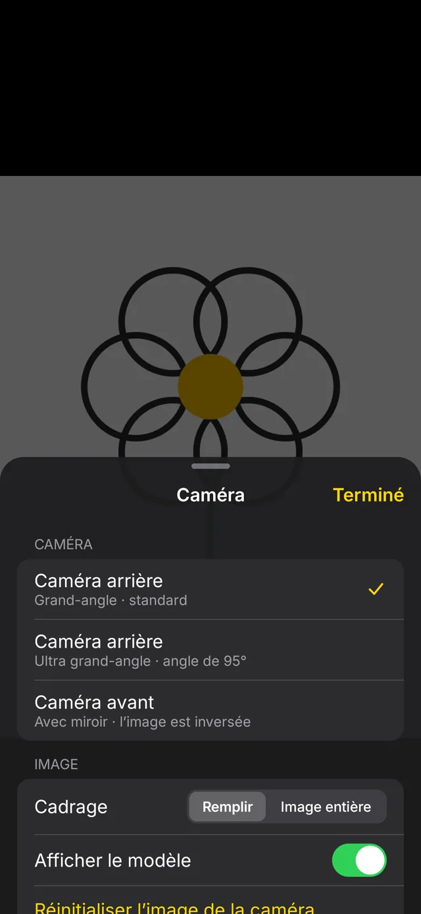
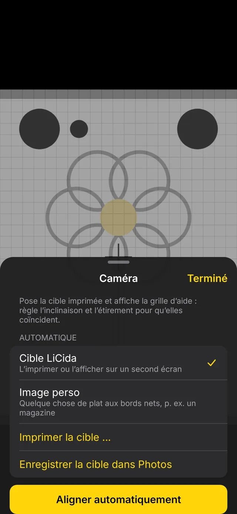
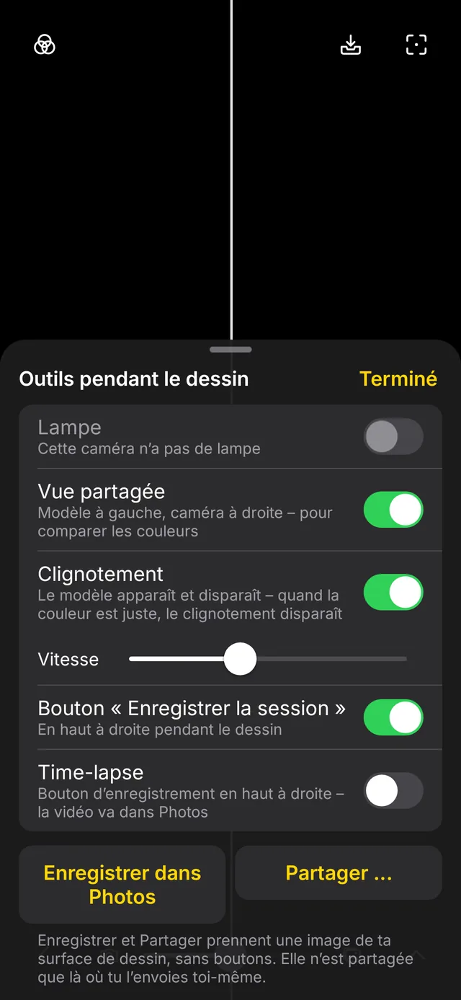
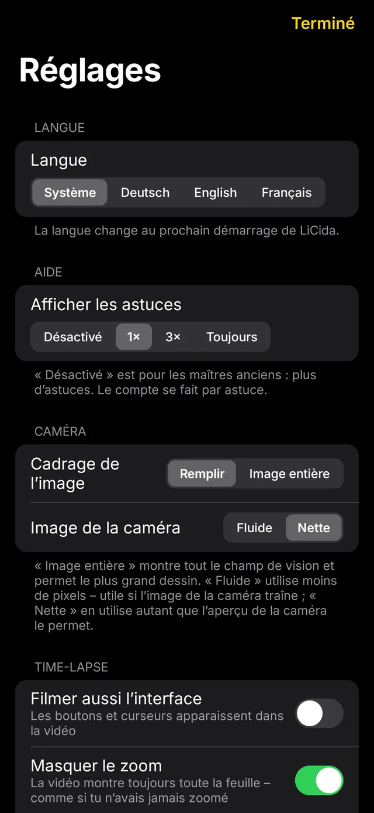

Nouveau : version 0.2 bêta
Nouveau : version 0.2 bêta
Dessinez ce que vous voyez.
Sur papier.
LiCida superpose votre modèle à l’image de votre feuille filmée par l’appareil photo.
Vous regardez l’écran et repassez simplement les traits.

L’instrument de dessin
des maîtres anciens.
Une camera lucida reflète le sujet sur votre feuille. Les peintres s’en servent depuis plus de 200 ans pour reporter des contours. LiCida fait de même avec l’appareil photo de votre téléphone. Le modèle est l’app iOS « Camera Lucida », reconstruite pour Android et conçue selon les Human Interface Guidelines d’Apple.
Comment ça marche
En trois étapes
Le téléphone au-dessus du papier, choisir un modèle, repasser les traits.
1 · Installer
Placez le téléphone bien au-dessus de la feuille, l’objectif vers le bas, par exemple sur un support, un trépied ou une pile de livres.
2 · Ajuster
Choisissez une image dans Photos ou Fichiers et placez-la avec deux doigts là où elle doit aller sur le papier.
3 · Dessiner
L’appareil photo et le modèle sont maintenant liés. Vous pouvez zoomer jusqu’à 30×, faire la mise au point et verrouiller l’exposition pendant que vous dessinez.
Images
L’interface
Une surface noire avec des boutons en verre flottants, organisée comme l’app Appareil photo. Rien ne vous distrait pendant le dessin.








Sessions
Reprendre plus tard
Une séance retient le modèle, les filtres, la position, l’appareil photo et l’alignement, ainsi qu’un instantané de votre feuille.
- Retrouver la feuille : l’instantané se superpose à l’image de l’appareil photo, vous placez le papier en conséquence.
- Ou automatiquement : LiCida détecte le décalage, la rotation et la taille par comparaison d’images et déplace le modèle en conséquence.
- Uniquement sur l’appareil : rien n’est envoyé.

Dessiner en grand
Dessiner au mur
En mode projecteur, l’image caméra reste noire et seul le modèle s’allume. Un clavier Bluetooth, une manette ou une télécommande selfie règlent le zoom, l’opacité et le clignotement pendant que vous êtes au mur.
- Touches librement configurables : par défaut comme l’original, E Q pour zoomer, W A S D pour déplacer.
- L’accéléré continue de filmer : l’appareil photo tourne toujours.

Fonctions
Autres fonctions
Toutes les fonctions sont incluses. Il n’y a aucun achat intégré.
Des filtres qui se combinent
Niveaux de gris, postérisation, valeurs de glacis, BD, néon, contours, seuil, grille et repères d’angle. Avec un historique et trois suites personnalisées.
Palette de couleurs
Réduit le modèle à quelques couleurs. En dessinant, vous masquez les couleurs une à une, par exemple pour peindre couleur par couleur.
Alignement automatique
Imprimez l’image cible, posez-la et touchez. LiCida redresse alors l’image comme si l’appareil photo regardait à la verticale.
Accéléré
Une heure de dessin devient une minute de vidéo. L’encodeur d’Android la place directement dans vos photos.
Écran partagé et clignotement
Le modèle à gauche, la feuille à droite. Ou le modèle apparaît et disparaît : quand la couleur est juste, le clignotement s’arrête.
Visite et guide
Au premier lancement, une visite montre chaque bouton. Le guide en allemand est dans l’app et disponible en PDF à imprimer.
Confidentialité
Sans accès à Internet
LiCida ne voit que l’image que vous choisissez et l’image de la caméra. L’app n’a pas accès à Internet et ne peut donc rien envoyer.
Télécharger
Télécharger
Gratuit, version 0.2 bêta pour Android 10 et ultérieur.
F-Droid
Ajoutez le dépôt dans F-Droid, puis recherchez LiCida et installez-le.
Ajouter le dépôt dans F-Droid ›
Empreinte du dépôt
8DA9DEF44C65856A1B098DB7BF876D48514997EF17C7256E23E91EAC6C486500
APK
Téléchargez et installez directement. LiCida ne demande que l’accès à l’appareil photo.
Signature de l’app
SHA-256: 7aca15dc655f1581b554f0a2c93cf8eae271330d5c2684dca47a1a26e45da75d
Code source
Le code source complet et toutes les versions. Vous pouvez signaler bugs et idées dans le suivi des tickets.
Sommes de contrôle : SHA256SUMS · Bêta, car LiCida n’a encore été testé que sur peu d’appareils.